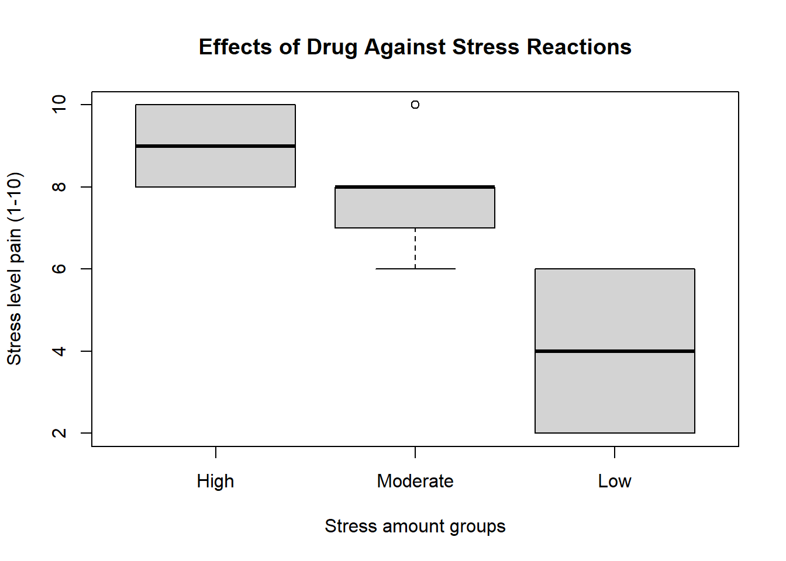
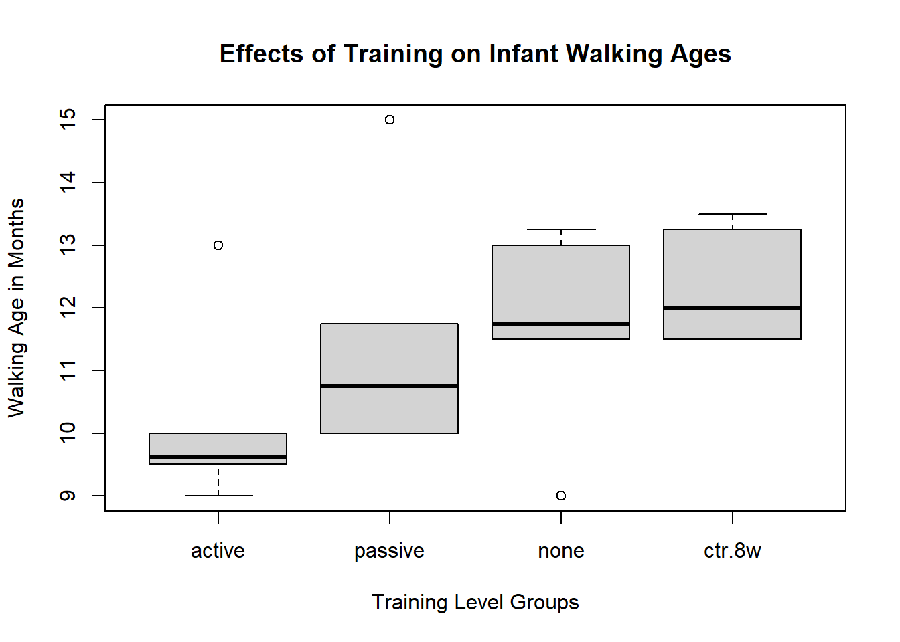
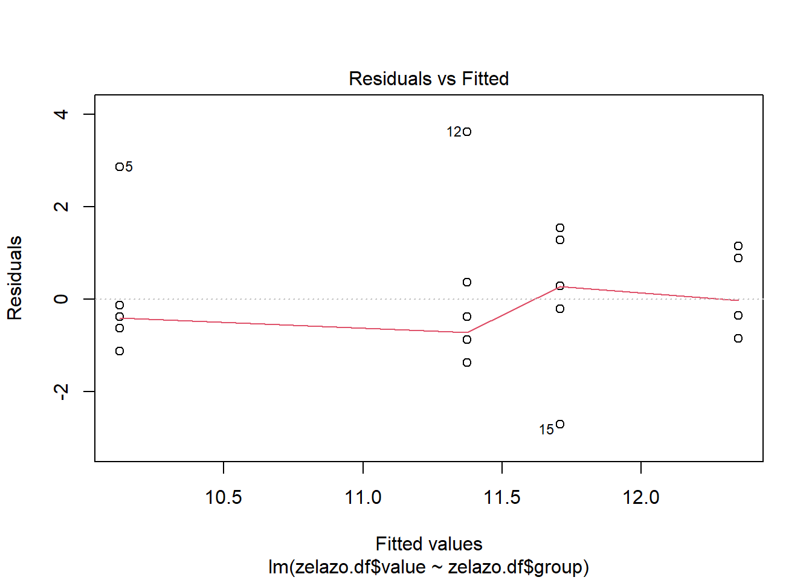
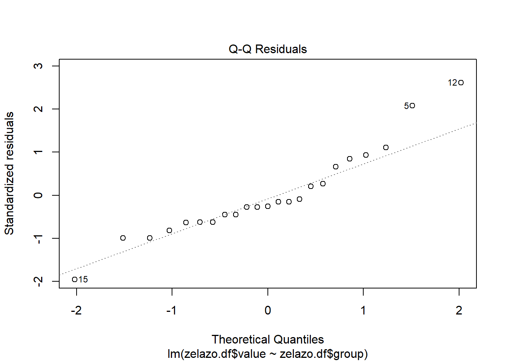
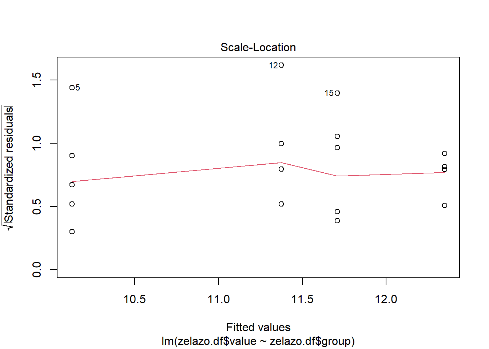
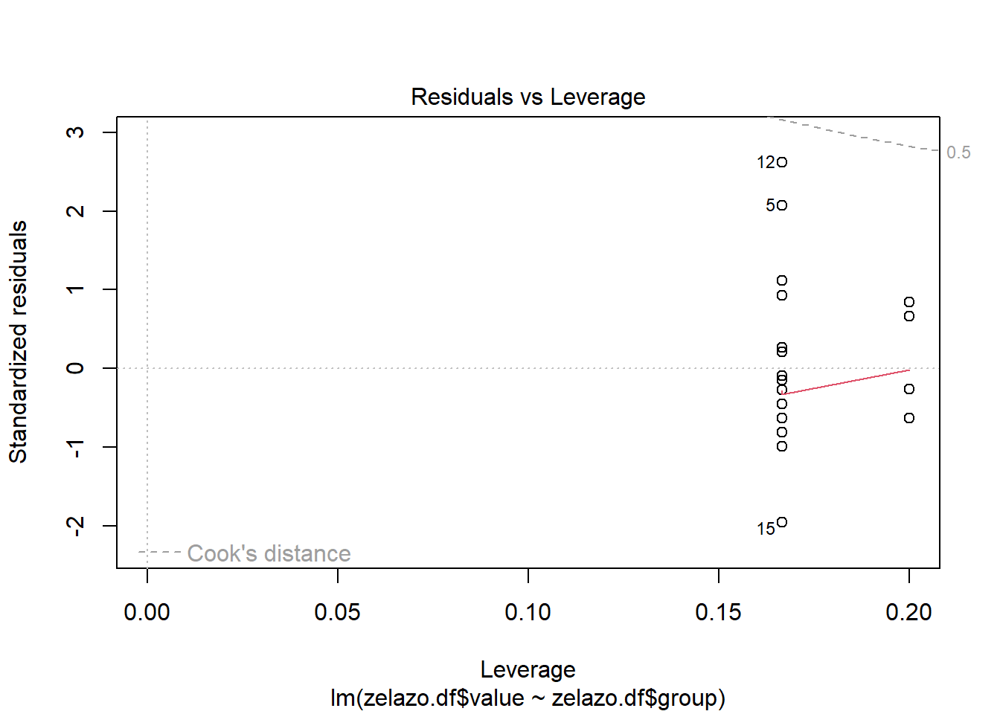

# LIS4273 - Module 8. Assignment
# Robert Walsh
# Professor Lingyao Li
# Question A.
# A researcher is interested in the effects of drug against
# stress reactions. She gives a reaction time test to three
# different groups of subjects:
# one group that is under a great deal of stress,
# one group under a moderate amount of stress,
# and a third group that is under almost no stress.
# The subjects of the study were instructed to take the drug test
# during their next stress episode and to report their stress on a
# scale of 1 to 10 (10 being the most pain).
df<-data.frame("High.Stress"=c(10,9,8,9,10,8),
"Moderate.Stress"=c(8,10,6,7,8,8),
"Low.Stress"=c(4,6,6,4,2,2))
df High.Stress Moderate.Stress Low.Stress
1 10 8 4
2 9 10 6
3 8 6 6
4 9 7 4
5 10 8 2
6 8 8 2stress.pain.level<-c(df$High.Stress,df$Moderate.Stress,df$Low.Stress)
subject.group.amount<-factor(c(rep("High",6),
rep("Moderate",6),
rep("Low",6)),
levels = c("High","Moderate","Low"))
# Report on drug and stress level by using R.
# Provide a full summary report on the result
# of ANOVA testing and what it means.
# Look at the means for stress level by group:
tapply(stress.pain.level,subject.group.amount,mean) High Moderate Low
9.000000 7.833333 4.000000 # Look at the variations for stress level by group:
tapply(stress.pain.level,subject.group.amount,var) High Moderate Low
0.800000 1.766667 3.200000 # Look at a boxplot graph:
boxplot(stress.pain.level ~ subject.group.amount,
main = "Effects of Drug Against Stress Reactions",
xlab = "Stress amount groups",
ylab = "Stress level pain (1-10)")
# More specifically, report the following:
# Df, Sum, Sq Mean, Sq, F value, Pr(>F)
# Did the drug have any affect on specific groups stress levels?
# Test the difference between the means of the groups with ANOVA.
# Null Ho: The mean stress levels are similar between groups
# Alt Ha: The mean stress levels are significantly different between groups
aov.out<-aov(stress.pain.level ~ subject.group.amount,data = df)
summary(aov.out) Df Sum Sq Mean Sq F value Pr(>F)
subject.group.amount 2 82.11 41.06 21.36 4.08e-05 ***
Residuals 15 28.83 1.92
---
Signif. codes: 0 '***' 0.001 '**' 0.01 '*' 0.05 '.' 0.1 ' ' 1# The Df for subject.group.amount is '2' because there are three
# groups sampled, so k-1 = 2, where k = number of groups sampled.
# for the residuals row, the Df is '15' because there are 6 observations
# in 3 samples, so N-k = 18-3 = 15.
# Sum Sq is for 'Sum of the Squares' which is measuring the variance,
# the higher this number is = more variance in the data, or groups.
# Sum Sq for subject.group.amount, SS(B) = 82.11, indicating a large
# variance between the groups, and Sum Sq for the residuals, SS(W) = 28.83
# indicating a large variance within the groups as well.
# Adding both of these would give the Total Variance.
# SS(B)+SS(W)=SS(T)
# Mean Sq normalizes the Sums of Squares by calculating mean squares.
# Size of obtained mean differences (including treatment effects) = MS(B)
# The Mean Sq for 'subject.group.amount' is: MS(B)=SS(B)/(K-1) = 41.06,
# There is a large difference between the means in the sample groups.
# Size of expected differences by chance (without treatment effects) = MS(W)
# The Mean Sq for the residuals is: MS(W)=SS(W)/(N-k) = 1.92
# The residuals row shows a smaller difference within the sample groups.
# The F value is the result of MS(B)/MS(W) = 21.36
# This test accounts for the random variation causing difference
# in the mean squares and is the analysis of variance between means.
# A value close to '1' indicates that the treatment has little to no effect
# on the group means, which does not signify a difference between groups,
# and there is not enough evidence to reject the Null Hypothesis that the
# means are very similar or identical.
# A large F value indicates a significant treatment effect, and would
# cause the Null Hypothesis of similar means to be rejected because there
# is enough evidence for the Alternative Hypothesis to be considered.
# The Pr(>F) from ANOVA works like similar p-value significance tests.
# 95% confidence needs a p-value less than 0.05 to reject the Null.
# In this test the p-value = 4.08e-05, is significantly smaller than 0.001,
# indicating that the statistics are very significant.
# The large F value at 21.36 and the low 4.08e-05 p-value suggests
# evidence against the null hypothesis. Therefore, it can be assumed
# that the mean stress levels differ significantly among the three groups.
# Question B.
# From our Textbook: Introductory Statistics with R.
# Chapter # 6 Exercises 6.1 pp. 127 plus.
# The zelazo data (taken from the textbook's R package called ISwR)
# are in the form of a list of vectors, one for each of the four groups.
# B1. Convert the data to a form suitable for the user of lm,
# and calculate the relevant test.
library(ISwR)
data("zelazo")
summary(zelazo) Length Class Mode
active 6 -none- numeric
passive 6 -none- numeric
none 6 -none- numeric
ctr.8w 5 -none- numeric# To convert the data for linear model, lm()
# A 'value' column will hold the combined response variables
# A 'group' factor will create the categorical variable that
# will be used to combine the predictor variables
zelazo.df<-data.frame(
value=unlist(zelazo,use.names = F),
group=factor(rep(c("active","passive","none","ctr.8w"),sapply(zelazo,length)),
levels = c("active","passive","none","ctr.8w")))
zelazo.df value group
1 9.00 active
2 9.50 active
3 9.75 active
4 10.00 active
5 13.00 active
6 9.50 active
7 11.00 passive
8 10.00 passive
9 10.00 passive
10 11.75 passive
11 10.50 passive
12 15.00 passive
13 11.50 none
14 12.00 none
15 9.00 none
16 11.50 none
17 13.25 none
18 13.00 none
19 13.25 ctr.8w
20 11.50 ctr.8w
21 12.00 ctr.8w
22 13.50 ctr.8w
23 11.50 ctr.8w# Boxplot to view age at walking values by four group levels
boxplot(zelazo.df$value~zelazo.df$group,
main = "Effects of Training on Infant Walking Ages",
xlab = "Training Level Groups",
ylab = "Walking Age in Months")
# Model and call the linear model, lm()
# This will model the relationship between the magnitude of one
# variable and that of a second
zelazo.lm<-lm(zelazo.df$value~zelazo.df$group)
summary(zelazo.lm)
Call:
lm(formula = zelazo.df$value ~ zelazo.df$group)
Residuals:
Min 1Q Median 3Q Max
-2.7083 -0.8500 -0.3500 0.6375 3.6250
Coefficients:
Estimate Std. Error t value Pr(>|t|)
(Intercept) 10.1250 0.6191 16.355 1.19e-12 ***
zelazo.df$grouppassive 1.2500 0.8755 1.428 0.1696
zelazo.df$groupnone 1.5833 0.8755 1.809 0.0864 .
zelazo.df$groupctr.8w 2.2250 0.9182 2.423 0.0255 *
---
Signif. codes: 0 '***' 0.001 '**' 0.01 '*' 0.05 '.' 0.1 ' ' 1
Residual standard error: 1.516 on 19 degrees of freedom
Multiple R-squared: 0.2528, Adjusted R-squared: 0.1348
F-statistic: 2.142 on 3 and 19 DF, p-value: 0.1285# The residual standard error of 1.516 could be considered small
# indicating that the regression model fits the data set well.
# The median value in the distribution of the residuals is close to zero
# at -0.3500 and the min & max are roughly equal in absolute value.
# An F-value of 2.14 with a p-value of 0.1285 indicates that there is not
# enough evidence to reject the null hypothesis that the model with no
# independent variables fits the data as well as the model including treatment
# effects.The observed differences between groups are likely due to chance,
# as the p-value is relatively high and not statistically significant at the
# standard 0.05 significance level. To find the relationship between groups
# that is causing the difference, further investigation is necessary.
# Consider t-tests comparing selected subgroups
# or obtained by combining groups.
# The only group in the regression summary that showed significant
# statistical results was the 'ctr.8w' control group with a t-value
# of 2.423 and a Pr(>|t|) value of 0.0255 * indicating significant evidence
# to reject the null that the true coefficient of the control group and the
# intercept is equal to zero, and a relationship between the variables exists.
# So I will begin by using t-tests to compare the subgroups of the
# control group and the other groups to test for significant differences
# between the means of the groups.
tapply(zelazo.df$value,zelazo.df$group,var) active passive none ctr.8w
2.093750 3.593750 2.310417 0.925000 # The variances are not the same between the groups so the Welch's
# variant of the t-test is sufficient.
# Two sample t-test comparing the means of 'none' group to 'control' group
t.test.result1<-t.test(zelazo.df$value~zelazo.df$group,
data=zelazo.df,
subset=group%in%c("none","ctr.8w"))
t.test.result1
Welch Two Sample t-test
data: zelazo.df$value by zelazo.df$group
t = -0.84986, df = 8.5046, p-value = 0.4187
alternative hypothesis: true difference in means between group none and group ctr.8w is not equal to 0
95 percent confidence interval:
-2.364947 1.081614
sample estimates:
mean in group none mean in group ctr.8w
11.70833 12.35000 # The p-value of 0.4187 is > 0.05 alpha, so there is not significant evidence
# to reject the null hypothesis that there is no difference between the means
# Two sample t-test comparing the means of 'passive' group to 'control' group
t.test.result2<-t.test(zelazo.df$value~zelazo.df$group,
data=zelazo.df,
subset=group%in%c("passive","ctr.8w"))
t.test.result2
Welch Two Sample t-test
data: zelazo.df$value by zelazo.df$group
t = -1.1012, df = 7.6531, p-value = 0.3042
alternative hypothesis: true difference in means between group passive and group ctr.8w is not equal to 0
95 percent confidence interval:
-3.032993 1.082993
sample estimates:
mean in group passive mean in group ctr.8w
11.375 12.350 # The p-value of 0.3042 is > 0.05 alpha, so there is not significant evidence
# to reject the null hypothesis that there is no difference between the means
# Two sample t-test comparing the means of active group to control group
t.test.result3<-t.test(zelazo.df$value~zelazo.df$group,
data=zelazo.df,
subset=group%in%c("active","ctr.8w"))
t.test.result3
Welch Two Sample t-test
data: zelazo.df$value by zelazo.df$group
t = -3.0449, df = 8.6632, p-value = 0.01453
alternative hypothesis: true difference in means between group active and group ctr.8w is not equal to 0
95 percent confidence interval:
-3.8878619 -0.5621381
sample estimates:
mean in group active mean in group ctr.8w
10.125 12.350 # The p-value of 0.01453 is < 0.05 alpha, so there is significant evidence
# to reject the null hypothesis that there is no difference between the means!
# We can conclude that a difference between these two groups' means exists!
# B2. Consider the ANOVA test (one-way or two-way) for this dataset (zelazo)
# The one-way ANOVA test will test the null hypothesis that there is no
# difference between the means of the group that received the treatment and
# the means of the groups that did not receive the treatment.
# h0: All group means are equal
# ha: All group means are not equal
# The one-way test to compare differences between the group means
oneway.test(zelazo.df$value~zelazo.df$group)
One-way analysis of means (not assuming equal variances)
data: zelazo.df$value and zelazo.df$group
F = 2.7759, num df = 3.000, denom df = 10.506, p-value = 0.09373# With an F value = 2.7759, and p-value = 0.09373, we fail to reject the null
# hypothesis that all group means are equal. This is strange because we know
# they are different somehow, further analysis of the groups is needed.
# The aov() function fits analysis of variance (ANOVA)
# models directly to the data
zelazo.aov<-aov(zelazo.df$value~zelazo.df$group,data=zelazo.df)
zelazo.aovCall:
aov(formula = zelazo.df$value ~ zelazo.df$group, data = zelazo.df)
Terms:
zelazo.df$group Residuals
Sum of Squares 14.77781 43.68958
Deg. of Freedom 3 19
Residual standard error: 1.516394
Estimated effects may be unbalancedsummary(zelazo.aov) Df Sum Sq Mean Sq F value Pr(>F)
zelazo.df$group 3 14.78 4.926 2.142 0.129
Residuals 19 43.69 2.299 # It returns an ANOVA table with sources of variation and associated statistics
# The anova() function performs analysis of variance (ANOVA)
# on model objects
anova(zelazo.lm)Analysis of Variance Table
Response: zelazo.df$value
Df Sum Sq Mean Sq F value Pr(>F)
zelazo.df$group 3 14.778 4.9259 2.1422 0.1285
Residuals 19 43.690 2.2995 # It returns an ANOVA table comparing models or factors,
# showing sources of variation and statistics
# Which yields the same results as the lm()
summary(zelazo.lm)
Call:
lm(formula = zelazo.df$value ~ zelazo.df$group)
Residuals:
Min 1Q Median 3Q Max
-2.7083 -0.8500 -0.3500 0.6375 3.6250
Coefficients:
Estimate Std. Error t value Pr(>|t|)
(Intercept) 10.1250 0.6191 16.355 1.19e-12 ***
zelazo.df$grouppassive 1.2500 0.8755 1.428 0.1696
zelazo.df$groupnone 1.5833 0.8755 1.809 0.0864 .
zelazo.df$groupctr.8w 2.2250 0.9182 2.423 0.0255 *
---
Signif. codes: 0 '***' 0.001 '**' 0.01 '*' 0.05 '.' 0.1 ' ' 1
Residual standard error: 1.516 on 19 degrees of freedom
Multiple R-squared: 0.2528, Adjusted R-squared: 0.1348
F-statistic: 2.142 on 3 and 19 DF, p-value: 0.1285plot(zelazo.lm)



# Because the p-value is > 0.05, we fail to reject the null hypothesis
# that each group mean is equal, However, Post-Hoc Tests can be
# used to explore how the groups differ from each other to learn more
# about where the variance in the means exists.
# The Tukey Test offers a glimpse at the relationships between all of the
# pairs and combinations of the groups
TukeyHSD(zelazo.aov) Tukey multiple comparisons of means
95% family-wise confidence level
Fit: aov(formula = zelazo.df$value ~ zelazo.df$group, data = zelazo.df)
$`zelazo.df$group`
diff lwr upr p adj
passive-active 1.2500000 -1.2117450 3.711745 0.4982812
none-active 1.5833333 -0.8784116 4.045078 0.3000594
ctr.8w-active 2.2250000 -0.3568999 4.806900 0.1063883
none-passive 0.3333333 -2.1284116 2.795078 0.9806495
ctr.8w-passive 0.9750000 -1.6068999 3.556900 0.7160591
ctr.8w-none 0.6416667 -1.9402332 3.223567 0.8962600# The adjusted p-value will indicate if there is a significant
# statistical relationship between two groups.
# The ctr.8w-active is closest to being less than 0.05 at 0.1063883,
# but is still not considered significant enough to be outside of the 95%
# confidence level